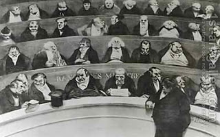

Sanhedrin 14 - The Decapitation of the Calf
If the body of a murder victim is discovered outside a town in the Land of Israel and it is not known who killed him, the town nearest to where the body was found has to take a calf that was never worked and bring it to a valley of unworked ground, where it is decapitated .
Measuring which town is nearest has to be carried out by three judges, members of the Great Sanhedrin. The decapitation of the calf is then performed by the court of the town which is nearest.
Normally, however, the members of the Sanhedrin do not leave the Chamber of Hewn Stones in the Temple, since " Your navel is like a moon-shaped basin; let not the strength of the blend diminish ..." is talking allegorically about the members of the Sanhedrin, who sat in a semicircle.
Art: Honoré Daumier - The Stomach of the Legislature the Ministerial Benches of 1834